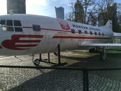

Into the ghetto
After 11 years of touring we are back in the country where it all started in the long, hot summer of 2007, Poland.
As always this part of the world doesn’t disappoint in terms of pig based meals, strong beers and sweet and juicy fruit in abundance. Coupled with a good dash of WW2 history Warsaw is a surprisingly good town to visit.
We’re staying in a traditional hostel on the top floor of a 1930’s ex communist building. It ticks all the boxes, nice bar, plentiful showers, Mcdonald’s round the corner and a full room of fellow travelers for Shaun to keep entertained each night with his thunderous snoring! There’s even a young couple bunking in together in what looks like their honeymoon- they don’t know how lucky they are that Stevie B is having a 1 year sabbatical otherwise they’d be sure to be joined in the marital bed by a drunk, horny Irish man each night when we land back at 3am.
Our final full day in Warsaw started with the standard free walking tour. Amazingly Shaun lasted a full 35 mins of the 2 hour tour on the Jewish history of Warsaw before huffing, puffing and moaning before slipping off for a beer.
We then headed out for a few beers in the beautiful old town. The polish must have a government directed control on the amount of alcohol people consume limiting people to no more than 1 beer an hour - this is the only way to explain the absolute age that it takes for waiter to bring you your beer after ordering it. Come to think of it the polish tardiness in the service sector is not confined to just bars - everywhere we went no one was in any hurry, from the coffee shop that took an age that knock out an americano to the Mcdonald’s where I thought Shaun was gonna shove a happy meal toy where the sun doesn’t shine of the guy handing out the food without getting out of first gear dispute the hungry hordes
Waiting on their burgers. It’s obvious now that all the best poles are in the UK working and the people left at home are just about ticking along.
We watched West Ham get a schooling from Liverpool in an Irish bar and were well looked after for a change by a fist pumping waiter cum MMA fighter. Buoyed by the football we headed out into the cold night and wandered into a few cute bars that took our fancy.
In 1 bar we were joined by Stevie B live from the 11.56 Belfast to portadown service via Skype. Whatever Steve said in the conversation the girl behind the bar took pity on us and knocked us up 2 vodka and Tabasco sauce shots for us - not good for heartburn after the last 24hrs intake.
The rest of the night followed the age old tradition of looking for ‘The Door’ (RP, 2012) Despite not finding it this time Warsaw is an easy city to have a good night out in. Theres lovely little bars down nearly every side street and there’s no such thing as a closing time so the town was still in full swing when we headed out around 3am.
Warsaw has been a good stop and we could have done with another day to cross a few museums off (maybe not Shaun). As always this part of the world doesn’t disappoint and after 11 years our thirst for a couple of days and nights getting stuck into a city is unquenchable.
On to next summer and the dirty dozen . . .
East
Photographs
{kind=link}
